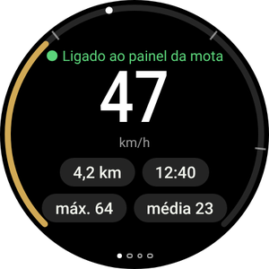
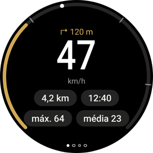
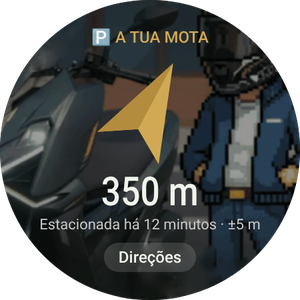
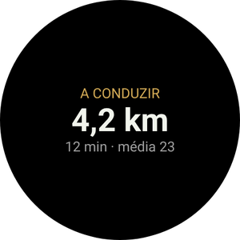
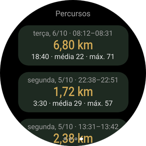
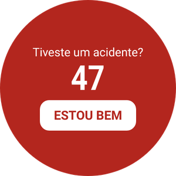
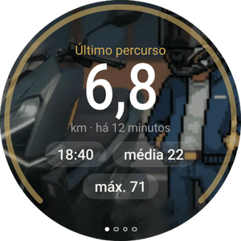
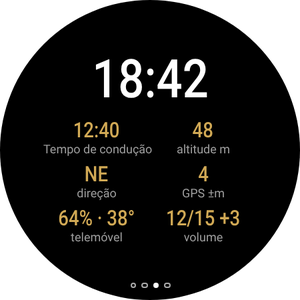

A tua mota no pulso
A app Wear OS é opcional e funciona com a app do telemóvel. Mostra a tua velocidade e a próxima manobra, vibra antes de cada viragem, leva-te de volta à mota estacionada e deixa-te controlar o Android Auto no painel sem tocar no telemóvel.
Ainda não tens a app do telemóvel? Começa pelo guia do telemóvel.

O que vais ver no relógio






- Um relógio com Wear OS 3 ou posterior: Galaxy Watch a partir do 4, Pixel Watch e outros. Os relógios Huawei, Amazfit e Garmin não usam Wear OS e não funcionam.
- O relógio já emparelhado com o telemóvel e o RideScreen AA 2.2 ou posterior instalado no telemóvel.
- Telemóvel e relógio na mesma rede Wi‑Fi (a de casa, por exemplo). Só é preciso para esta instalação.
- Uns 10–15 minutos. Fazes isto só uma vez: as versões seguintes instalam-se a partir do telemóvel.
Instalar a app no relógio
Os relógios não abrem ficheiros APK como um telemóvel, por isso desta primeira vez instalas com uma app do telemóvel que fala com o relógio por Wi‑Fi (depuração sem fios). Parece técnico, mas são só uns toques.
-
Descarrega o APK do relógio no telemóvel
Toca no botão para descarregar diretamente o APK do relógio (o que termina em WearOS-reloj.apk). Deixa-o na pasta Transferências.
Instala também no telemóvel uma destas apps da Play Store: Wear Installer 2 ou Bugjaeger.
Descarregar o APK do relógio -
Ativa as opções de programador do relógio
Galaxy Watch: Definições → Acerca do relógio → Informações do software → toca 5 vezes em Versão do software.
Pixel Watch e outros: Definições → Sistema → Acerca → toca 7 vezes em Número da compilação.
Uma mensagem diz que as opções de programador estão ativadas.
-
Liga o relógio ao Wi‑Fi
Definições → Ligações → Wi‑Fi: põe em Ativado (não Automático) e liga-te à mesma rede do telemóvel.
Se mais tarde o relógio não mostrar endereço IP, desliga o Bluetooth do telemóvel por um momento: o relógio só usa o Wi‑Fi quando não chega ao telemóvel por Bluetooth. -
Ativa a depuração sem fios
Definições → Opções de programador → ativa a Depuração ADB e a Depuração sem fios. Abre Depuração sem fios → Sincronizar novo dispositivo.
O relógio mostra um código de 6 dígitos e um endereço com porta, por exemplo 192.168.1.40:37115.
Aumenta primeiro o tempo limite do ecrã do relógio: se o ecrã se apagar durante a sincronização, o código expira. -
Sincroniza e instala a partir do telemóvel
Abre o Wear Installer 2 (ou o Bugjaeger), escreve o endereço e o código de sincronização e depois liga-te com o endereço que aparece no ecrã Depuração sem fios.
Escolhe o ficheiro …-WearOS-reloj.apk nas Transferências e instala-o. Em menos de um minuto o RideScreen AA aparece no relógio.
A porta para sincronizar e a porta para ligar são diferentes. É o erro mais comum. -
Abre-a e desativa a depuração
Abre o RideScreen AA no relógio e permite a localização (para a bússola até à mota) e as notificações.
Já podes desativar a depuração sem fios e a depuração ADB: não são precisas para o usar nem atualizar.

Controlar o Android Auto a partir do relógio
O painel da Zontes não é tátil. Com o relógio controlas o Android Auto como com o comando de um carro: uma roda para te moveres pelo ecrã e botões para selecionar, voltar ou falar com o Assistente.
A cruzeta (desliza até à segunda página)
- ▲ ▼Toque: roda a roda do Android Auto, de elemento em elemento. Manter premido: seta para cima ou para baixo.
- ◀ ▶Setas esquerda e direita: mudar de coluna ou separador.
- OKSelecionar o elemento destacado.
- ↩Voltar.
- ⌂Início do Android Auto.
- 🎤Assistente Google («leva-me a…», «põe música»).
- 📊Voltar aos dados da viagem.
Com aro ou coroa rotativa
Galaxy Watch Classic, Pixel Watch e relógios com coroa rotativa.
- Roda o aro ou a coroa para te moveres pelo Android Auto, tal como a roda do comando de um carro. Funciona em qualquer página do relógio.
- Carrega em OK na cruzeta para selecionar.
- Na página Viagens, o aro percorre a lista em vez de mover o Android Auto.
Sem aro
Galaxy Watch normais (4, 5, 6, 7…) e relógios de ecrã plano.
- Os botões ▲ ▼ da cruzeta fazem de roda: um toque, um passo.
- Mantém-nos premidos quando precisares de uma seta de verdade, por exemplo para subir numa lista.
- Nos Galaxy Watch com aro tátil, ativa-o nas definições do relógio e desliza o dedo pela borda do ecrã como se fosse o aro.
As páginas da app
Desliza para a esquerda e para a direita. Os pontos em baixo mostram em que página estás.

Vibrações de viragem
Com a navegação do Android Auto, o relógio vibra antes de cada manobra: 2 toques para a esquerda, 3 para a direita, um longo e N curtos para a saída N de uma rotunda e dois longos para inversão de marcha.
Ativa-o na app do telemóvel: ⚙️ Definições → Extras de condução → Vibrações de viragem no relógio. É experimental.
Mosaico e complicação
Adiciona o mosaico Percurso (desliza a partir do mostrador e toca em +) para veres a viagem em curso ou onde estacionaste. A complicação RideScreen · km põe os km da viagem no mostrador.
Atualizar o relógio
-
A partir do telemóvel, sem computador
A partir da versão 2.2, quando sair uma versão nova: no telemóvel, ❓ Ajuda → ⌚ Atualizar a aplicação do relógio → Versão mais recente.
O telemóvel descarrega a app do relógio e envia-a por Bluetooth. Demora uns minutos: vês o progresso no telemóvel e no relógio. Quando acabar, toca em Instalar no relógio.
Da primeira vez, o relógio pede-te para permitir que o RideScreen AA instale apps: ativa e volta atrás.
Problemas habituais
O relógio não mostra endereço IPAo ativar a depuração sem fios
- Põe o Wi‑Fi do relógio em Ativado, não Automático, e liga-te à mesma rede do telemóvel.
- Desliga o Bluetooth do telemóvel por um momento para o relógio passar para Wi‑Fi. Volta a ligá-lo quando acabares.
O Wear Installer não ligaAo sincronizar
- Usa a porta de Sincronizar novo dispositivo para sincronizar, e a do ecrã principal de Depuração sem fios para ligar. São diferentes.
- Se o código expirou, toca outra vez em Sincronizar novo dispositivo: recebes um novo.
«O pacote parece ser inválido»Ao instalar
Provavelmente é o APK do telemóvel. O relógio precisa do que termina em WearOS-reloj.apk.
O relógio diz «Sem dados do telemóvel»Com a app instalada
- Abre o RideScreen AA no telemóvel pelo menos uma vez e confirma que o relógio está ligado ao telemóvel (app Galaxy Wearable ou Pixel Watch).
- As apps do telemóvel e do relógio têm de vir da mesma página de transferência: não funcionam com a versão da Play Store nem com o OpenCfMoto original.
«⚠️ Iniciar o servidor head unit do Android Auto»Na página da viagem
O servidor da unidade principal do Android Auto está desligado no telemóvel. No Android Auto: ⋮ → Iniciar servidor da unidade principal (passo 6 do guia do telemóvel).
«Este relógio não permite que as aplicações instalem atualizações»Ao atualizar a partir do telemóvel
O teu relógio não deixa que uma app instale outra. Instala a versão nova como da primeira vez (Parte 1).
Nada distoComo obter ajuda
No telemóvel toca em ❓ Ajuda → Partilhar registos e envia-o para o grupo com os modelos do relógio e do telemóvel.
O RideScreen AA é grátis e de código aberto, baseado no OpenCfMoto de Alexandru (zanderp). Não é uma app oficial da Zontes nem da Google. Os ecrãs são ilustrativos: os nomes exatos das definições podem variar no teu relógio. · Guia do telemóvel